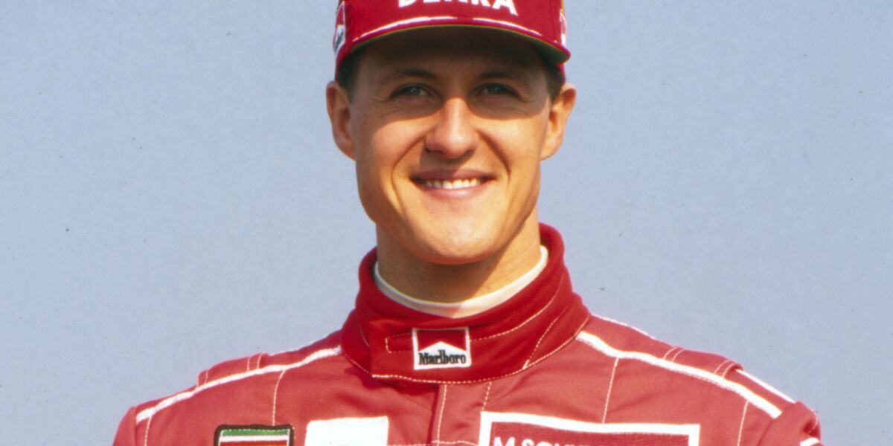
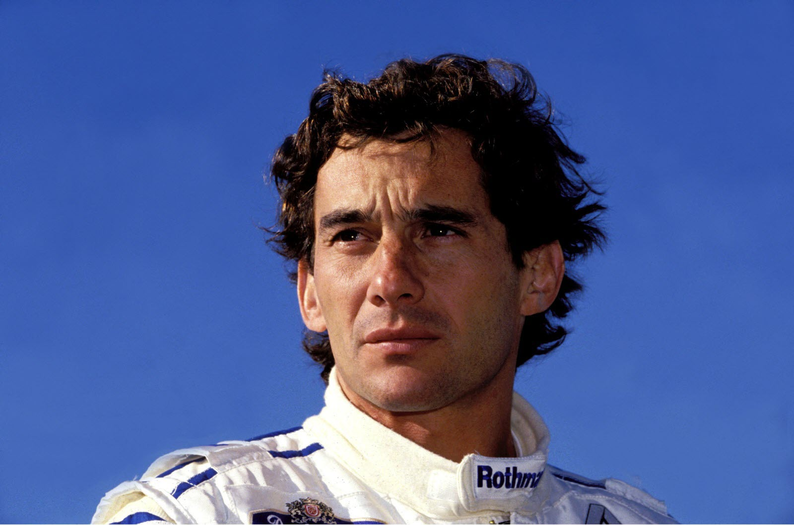
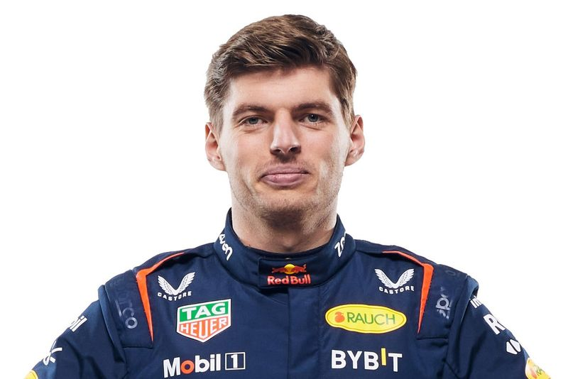
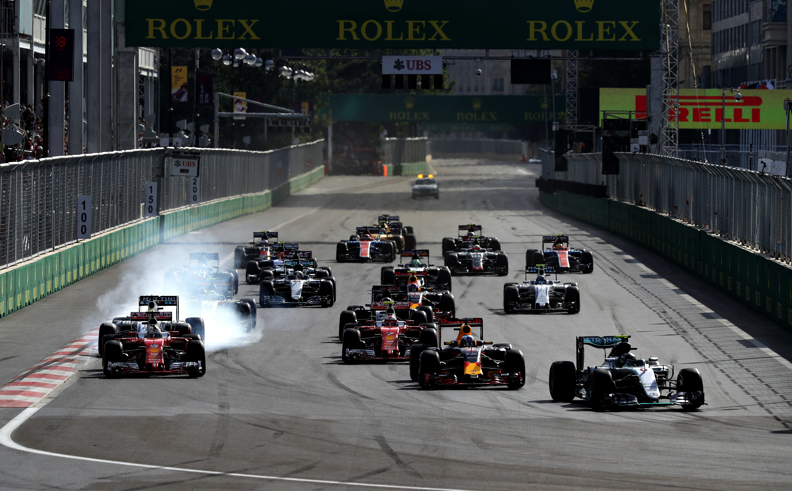
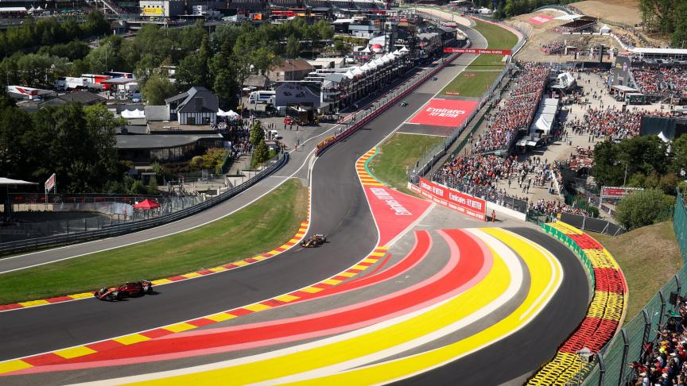
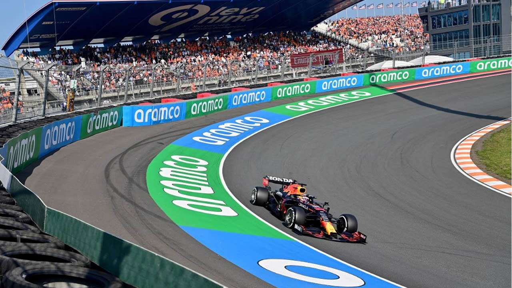

What is Formula One?
Formula One (more commonly known as Formula 1 or F1) is the highest class of international racing for open-wheel single-seater formula racing cars sanctioned by the Fédération Internationale de l'Automobile (FIA). The FIA Formula One World Championship has been one of the premier forms of racing around the world since its inaugural season in 1950. The word formula in the name refers to the set of rules to which all participants' cars must conform. A Formula One season consists of a series of races, known as Grands Prix. Grands Prix take place in multiple countries and continents around the world on either purpose-built circuits or closed public roads.
Famous drivers
- Lewis Hamilton 
- Michael Schumacher 
- Ayrton Senna 
- Max Verstappen

Specific F1 circuit

The Monaco F1 circuit is one of the most mythical and historical of the Formula 1 calendar.

The Baku F1 circuit has the longest straight (2,2 km) and extremely slow turns.

The Spa-Francorchamps circuit is the longest distance (7,004 km) in the Formula 1 World Championship.
